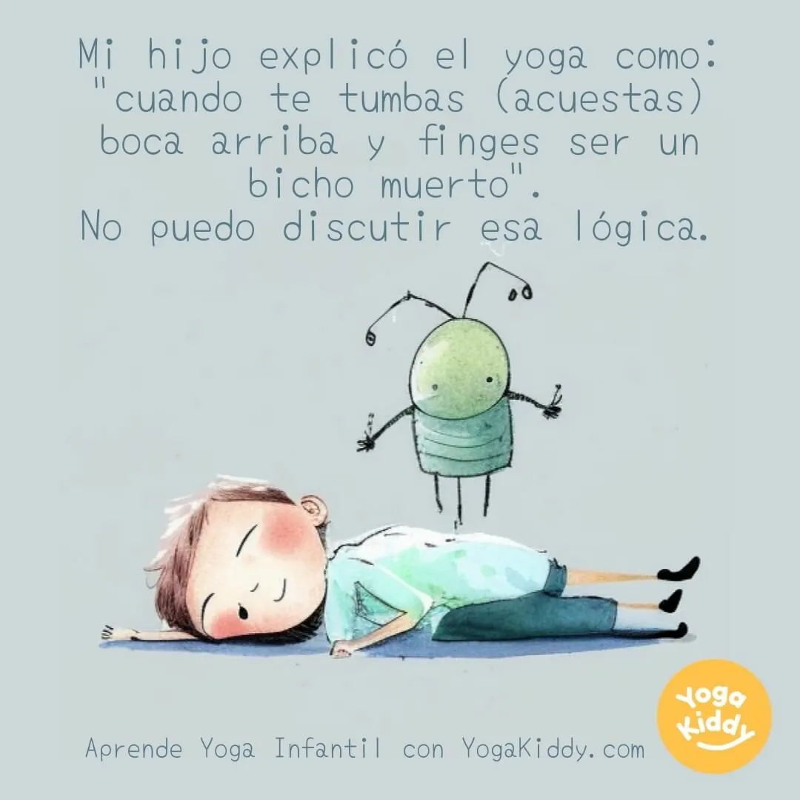

🤣🤣🤣 Hoy quiero compartir con ustedes una historia que me hizo reír y reflexionar al mismo tiempo. Resulta que mi hijo de 6 años, en su inagotable sabiduría, me explicó de la forma más original y sincera qué es el yoga. 🧘♀️🧒
Me dijo: "Mamá, el yoga es cuando te tumbas boca arriba y finges ser un bicho muerto". 🪲💀 ¿Pueden creerlo? ¡Me pareció tan gracioso y a la vez tan acertado! Al fin y al cabo, ¿no es eso lo que hacemos cuando estamos en la postura del "savasana" (la postura del cadáver)? 🧘♂️👻
Está claro que mi hijo ya es todo un yogui en potencia, que no necesita de complicadas posturas ni terminología para entender la esencia de esta práctica milenaria. ¡Claro que sí, campeón! 🥇💪
Así que, de ahora en adelante, cuando alguien me pregunte qué es el yoga, sin dudarlo un segundo, les diré: "Es cuando te tumbas boca arriba y finges ser un bicho muerto". ¡Gracias, pequeño sabio, por iluminarnos con tu maravillosa perspectiva del mundo! 🌍💡
¡No puedo esperar a que mi hijo me explique el mindfulness como si estuviéramos cazando Pokémons o cómo solucionar conflictos diplomáticos usando estrategias de Fortnite! 🎮🕊️
Y tú, ¿tienes alguna anécdota graciosa donde tus hijos hayan mostrado su peculiar sabiduría? ¡Compártela con nosotros! Porque, como dicen, de la boca de los niños siempre sale la verdad... y a veces, también, la más pura y divertida lógica. 😂🤗💖